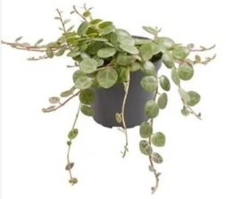
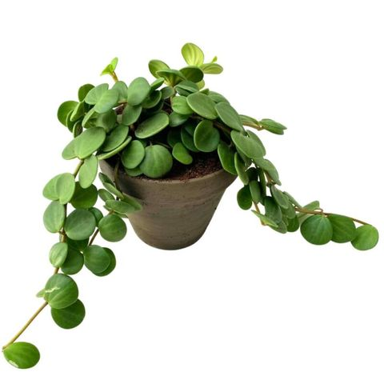
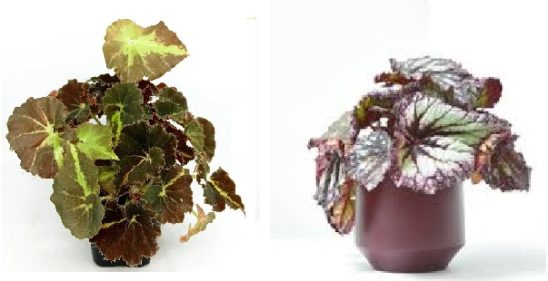
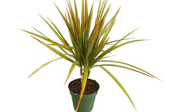
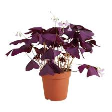
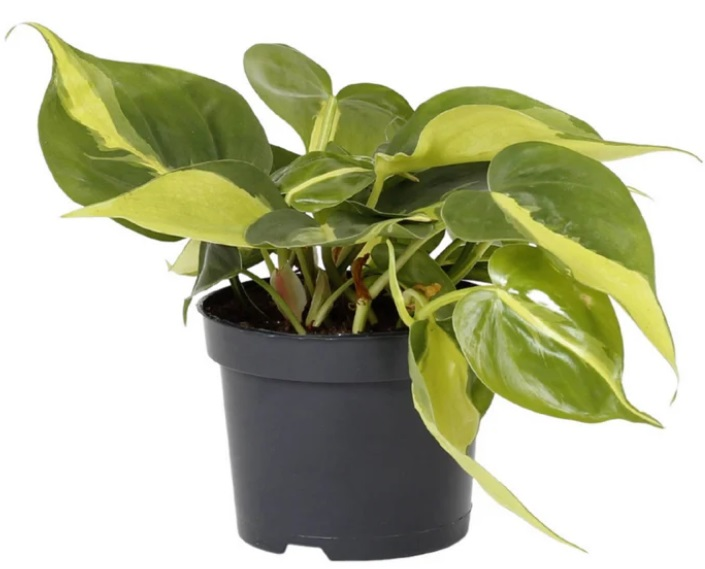
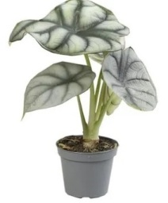
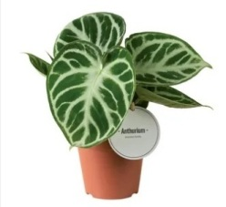
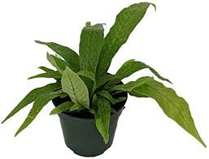

Nuestras plantas
Las plantas de la Plantitoteca son especiales: algunas "hacen yoga nocturno", otras tienen brillo azul, otras escamas...
Las clasificamos en "para todas las manos": plantas fáciles de cuidar, aptas para manos inexpertas; "color sin dramas": plantas con hojas de colores que alegrarán cualquier espacio y "plantas de coleccionista", aquellas plantas con un toque especial.
Descubre la tuya y hazla tan feliz como ella te hará a ti
Muchas de nuestras plantas las tienes también en formato baby
Plantas para todas las manos

Potos
Indestructible. Perfecta para principiantes y manos inexpertas. Trepadora natural.

Calathea Krimson
Clásica calathea morada que no pasa desapercibida.

Calathea Zebrina
Calathea alargada. Hojas como zebras verdes

Helecho Canguro
Como buen helecho es duro y resistente
A pesar de su nombre no salta

Peperomia Obtusifolia
La reina de las peperomias, de hojas regorditas y algo más grandes que otras.
Dale luz y crecerá preciosa y rápido

Peperomia prostrata
La princesa de las peperomias. Fácil cuidado y crecimiento rápido.
Hojitas con apariencia de caparazón de tortuga

Peperomia Tetraphylla Hope
Hermana de Peperomias Prostrata y Pepperspot. De hojas pequeñas y redonditas.

Peperomia Pepperspot
Hermana de Peperomia prostrata. Fácil, reducida y muy decorativa

Cebu Blue
Planta cebu, dura como ninguna.
Depende de la luz tiene un color azulado

Homalomena wallisii
Sus hojas son de camuflaje natural

Nephrolepsis Exaltata. Helecho
Sólo dale luz y humedad y llenará tu espacio rápidamente

Scindapsus Pictus (poto satén)
Desde el trópico a tu casa

Zamioculca (ZZ)
Crecimiento rápido. Ultra sencilla de cuidar
Color Sin Dramas

Fitonias
Un clásico para toda la familia y todas las manos

Begonia Rex
Begonia Rex, un clásico de color en tonos marrones o rosas, o verdes...

Dracaena Marginata
Palmera pequeña llena de color.

Maranta Lemon
Fácil y preciosa con colores verdes y lima

Oxalis
Trébol de la suerte. Con luz sufiente da pequeñas flores.
Pet Friendly

Filodendron Brasil
Directo desde el trópico es muy resistente, con colores verde y amarillo

Filodendron Ring of Fire
Hojas algo rizadas, preciosa y dura

Filodendron Pink Princess
Es una princesa rosa, pero que no te engañe, más dura que un caballero con armadura
Plantas de coleccionista

Alocasia Dragon Scale
Aunque tiene escamas no muerde ni le salen colmillos

Anturium Cristalimun
Preciosas hojas con brillo como un cristal

Helecho Cocodrilo
Helecho con hojas que simulan la piel de cocodrilo